4 Annotating count areas
We have data for the following counts provided by Sovon:
- Waterbird counts with a shapefile containing the surveyed areas and an
xlsxfile with the count results. Both can be linked using the identifiers contained in both datasets. - PTT counts, or point transect counts, contained within an
xlsxfile with the routes and all bird observations at an \((X, Y)\) location.
To make processing efficient, we will ‘annotate’ the PPIs with the corresponding area codes for the waterbird counts and some identifier for the PTT counts. Doing so, we can later on calculate relevant count-based parameters (e.g. bird biomass, etc.) and ‘join’ these by the corresponding identifiers.
4.1 Processing environment
4.2 Annotate PPIs with waterbird area codes
We rename the veriables retained in the shapefile to English and add a numerical wb_area_id which we can use to link the information retained in the shapefiles with the rasterized waterbird areas. All shapefiles are transformed to the CRS of the PPIs.
wb_areas <- st_read("data/raw/sovon/wavo_telgebieden.shp") %>%
rename(wb_area_nr = GEBIEDNR, wb_area_ha = OPPHA, xcoor = XCOOR, ycoor = YCOOR)
wb_areas$wb_area_id <- seq(1, length(wb_areas$wb_area_nr))
wb_areas_hrw <- st_transform(wb_areas, ppi_hrw$data@proj4string)
wb_areas_dhl <- st_transform(wb_areas, ppi_dhl$data@proj4string)## Reading layer `wavo_telgebieden' from data source `/mnt/volume_ams3_01/raw/sovon/wavo_telgebieden.shp' using driver `ESRI Shapefile'
## Simple feature collection with 4131 features and 4 fields
## geometry type: MULTIPOLYGON
## dimension: XY
## bbox: xmin: 13551.48 ymin: 307546.8 xmax: 278027 ymax: 622790
## proj4string: +proj=sterea +lat_0=52.15616055555555 +lon_0=5.38763888888889 +k=0.9999079 +x_0=155000 +y_0=463000 +ellps=bessel +units=m +no_defsWe rasterize specifically the newly created wb_area_id (as this is already a numerical and not categorical value like wb_area_nr) following the ‘template’ of the existing PPIs.
tpl_hrw <- st_as_stars(st_bbox(ppi_hrw$data), dx = ppi_hrw$data@grid@cellsize[1], dy = ppi_hrw$data@grid@cellsize[2], values = NA_real_)
tpl_dhl <- st_as_stars(st_bbox(ppi_dhl$data), dx = ppi_dhl$data@grid@cellsize[1], dy = ppi_dhl$data@grid@cellsize[2], values = NA_real_)
wb_areas_rasterized_hrw <- st_rasterize(wb_areas_hrw["wb_area_id"], template = tpl_hrw)
wb_areas_rasterized_dhl <- st_rasterize(wb_areas_dhl["wb_area_id"], template = tpl_dhl)Let’s see how that’s gone so far.
par(pty = "s", mfrow = c(1, 2))
plot(wb_areas_rasterized_hrw, main = "Herwijnen: wb_area_id")
plot(wb_areas_rasterized_dhl, main = "Den Helder: wb_area_id") 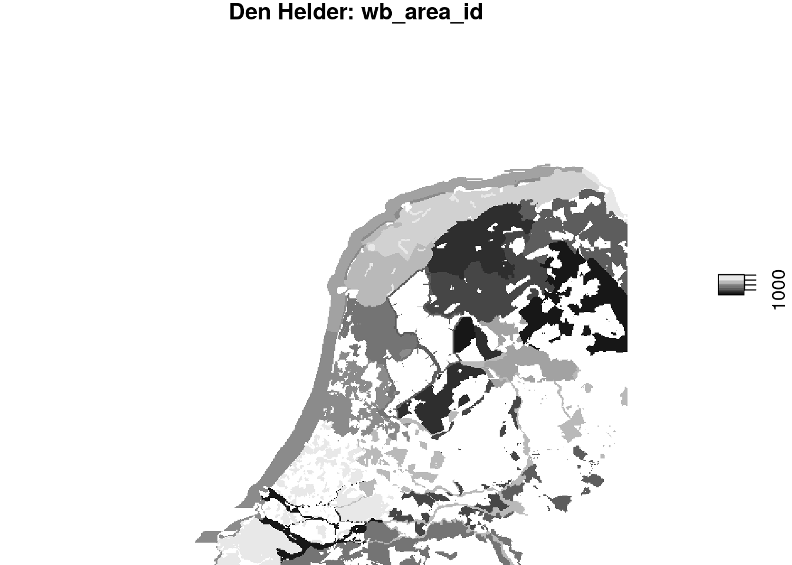
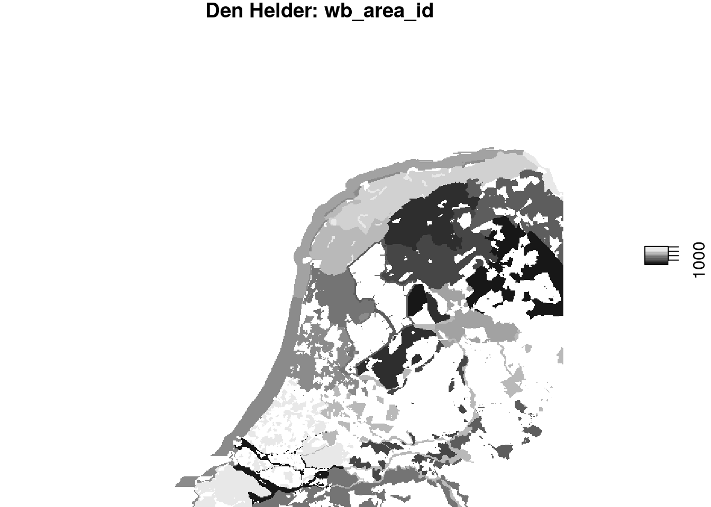
Visually that seems to have gone well, now let’s make sure the rasterized waterbird areas share the same grid as the PPI ‘rasters’.
compareRaster(as(wb_areas_rasterized_hrw, "Raster"), as(ppi_hrw$data, "RasterLayer"), extent = TRUE, rowcol = TRUE, crs = TRUE, res = TRUE, orig = TRUE)
compareRaster(as(wb_areas_rasterized_dhl, "Raster"), as(ppi_dhl$data, "RasterLayer"), extent = TRUE, rowcol = TRUE, crs = TRUE, res = TRUE, orig = TRUE)## [1] TRUE
## [1] TRUETwice a TRUE, so the rasters are identical (except for the values), so we can merge the datasets using a join on the wb_area_id.
# Add the wb_area_id to the PPIs
ppi_hrw$data$wb_area_id <- unlist(as.data.frame(as(wb_areas_rasterized_hrw, "Raster")))
ppi_dhl$data$wb_area_id <- unlist(as.data.frame(as(wb_areas_rasterized_dhl, "Raster")))
# Join the additional contents of the shapefiles
ppi_hrw$data@data %>%
left_join(dplyr::select(as.data.frame(wb_areas_hrw), wb_area_id, wb_area_nr, wb_area_ha), by = c("wb_area_id" = "wb_area_id")) -> ppi_hrw$data@data
ppi_hrw$data$geometry <- NULL
ppi_dhl$data@data %>%
left_join(dplyr::select(as.data.frame(wb_areas_dhl), wb_area_id, wb_area_nr, wb_area_ha), by = c("wb_area_id" = "wb_area_id")) -> ppi_dhl$data@data
ppi_dhl$data$geometry <- NULLLet’s verify if that occurred as planned.
plot(ppi_hrw, param = "wb_area_id", zlim = c(min(ppi_hrw$data@data$wb_area_id, na.rm = TRUE), max(ppi_hrw$data@data$wb_area_id, na.rm = TRUE)))
plot(ppi_dhl, param = "wb_area_id", zlim = c(min(ppi_dhl$data@data$wb_area_id, na.rm = TRUE), max(ppi_dhl$data@data$wb_area_id, na.rm = TRUE)))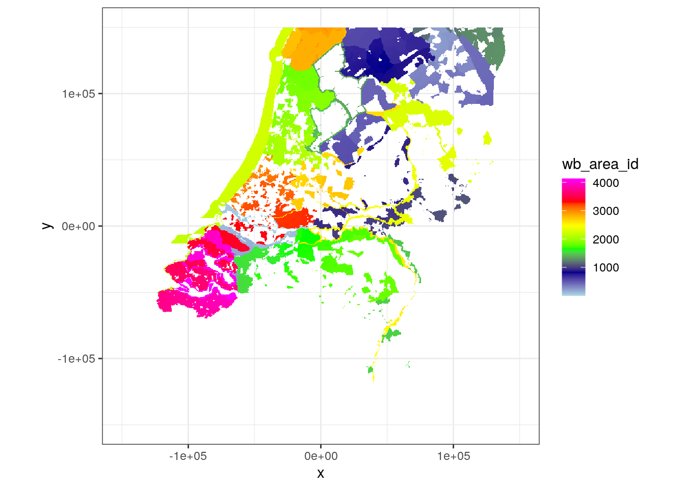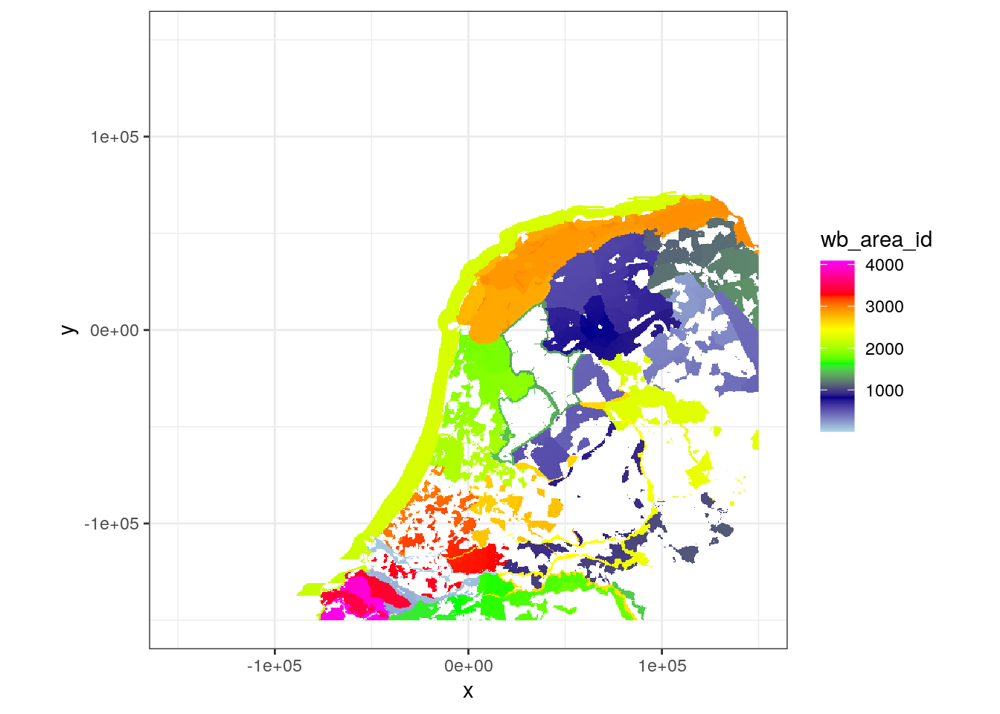
This looks very comparable to the plots of the rasterized scans above and wb_area_id shows similar areas in similar colors, so this worked fine.
4.3 Annotate PPIs with point-transect-counts
The PTT point transect counts are organized by routes, which consist of a few points along a transect/route. We can follow the same approach as above with the waterbird counts, by first creating coverage shapes (like the shapefile features for the waterbird areas) for each of the routes. Using the convex hull of the points within a route seems like a good starting point to convert these points to areas. However, in that case it would appear as if birds are only counted when looking ‘inwards’ to this shape. By buffering these convex hulls with a radius of the average distance between successive points, a more representative coverage area can be generated that generalises well across landscapes (e.g. the area covered in a dense forest would tend to be smaller than in open agricultural areas).
4.3.1 Loading PTT points
We load the PTT data directly from the xlsx file provided by Sovon and rename the variables to English.
ptt <- read_excel("data/raw/sovon/tel_dec_jan_1718.xlsx", sheet = "ptt") %>%
rename(count_id = tellingid, route = route, count_point = telpunt, season = seizoen, year = teljaar, month = maand, day = dag, species = soort, number = aantal)
head(ptt, 10)| count_id | route | count_point | season | year | month | day | euring | species | number | xcoor | ycoor |
|---|---|---|---|---|---|---|---|---|---|---|---|
| 80917 | 4 | 1 | 2017 | 2017 | 12 | 23 | 720 | Aalscholver | 2 | 246342 | 520763 |
| 80917 | 4 | 1 | 2017 | 2017 | 12 | 23 | 5920 | Zilvermeeuw | 18 | 246342 | 520763 |
| 80917 | 4 | 1 | 2017 | 2017 | 12 | 23 | 6700 | Houtduif | 1 | 246342 | 520763 |
| 80917 | 4 | 1 | 2017 | 2017 | 12 | 23 | 11870 | Merel | 4 | 246342 | 520763 |
| 80917 | 4 | 1 | 2017 | 2017 | 12 | 23 | 15630 | Roek | 24 | 246342 | 520763 |
| 80917 | 4 | 2 | 2017 | 2017 | 12 | 23 | 6700 | Houtduif | 1 | 246357 | 522178 |
| 80917 | 4 | 2 | 2017 | 2017 | 12 | 23 | 11870 | Merel | 1 | 246357 | 522178 |
| 80917 | 4 | 2 | 2017 | 2017 | 12 | 23 | 15600 | Kauw | 6 | 246357 | 522178 |
| 80917 | 4 | 2 | 2017 | 2017 | 12 | 23 | 15630 | Roek | 78 | 246357 | 522178 |
| 80917 | 4 | 3 | 2017 | 2017 | 12 | 23 | 14620 | Pimpelmees | 2 | 246692 | 523139 |
As we’re not interested in all the data here, we will load a subset of the columns, specifically all unique combinations of routes and points, which will yield the corresponding xcoor and ycoor coordinates for each count_point within a route.
ptt %>%
dplyr::select(route, count_point, xcoor, ycoor) %>%
group_by(route, count_point) %>%
slice(1) -> ptt
head(ptt, 10)| route | count_point | xcoor | ycoor |
|---|---|---|---|
| 4 | 1 | 246342 | 520763 |
| 4 | 2 | 246357 | 522178 |
| 4 | 3 | 246692 | 523139 |
| 4 | 4 | 248122 | 522563 |
| 4 | 5 | 248249 | 521818 |
| 4 | 6 | 248649 | 523073 |
| 4 | 7 | 249142 | 523614 |
| 4 | 8 | 250073 | 523534 |
| 4 | 9 | 252142 | 523524 |
| 4 | 10 | 253056 | 523458 |
4.3.2 Calculate interpoint distances
For each of the routes within the PTT dataset, we will calculate the average distance between the subsequent points, to buffer our convex hull by this value.
ptt %>%
group_by(route) %>%
mutate(xcoor2 = c(xcoor[-1], 0),
ycoor2 = c(ycoor[-1], 0)) %>%
rowwise() %>%
mutate(interpoint_distance = pointDistance(cbind(xcoor, ycoor), cbind(xcoor2, ycoor2), lonlat = FALSE)) %>%
ungroup() %>%
filter(xcoor2 != 0) %>% # Throw out last point from route where distance to next point is not relevant
group_by(route) %>%
summarise(avg_interpoint_distance = mean(interpoint_distance), .groups = "keep") -> ptt_interpoint_distances
ptt %>%
left_join(ptt_interpoint_distances, by = c("route" = "route")) -> ptt
head(ptt, 10)| route | count_point | xcoor | ycoor | avg_interpoint_distance |
|---|---|---|---|---|
| 4 | 1 | 246342 | 520763 | 1162.042 |
| 4 | 2 | 246357 | 522178 | 1162.042 |
| 4 | 3 | 246692 | 523139 | 1162.042 |
| 4 | 4 | 248122 | 522563 | 1162.042 |
| 4 | 5 | 248249 | 521818 | 1162.042 |
| 4 | 6 | 248649 | 523073 | 1162.042 |
| 4 | 7 | 249142 | 523614 | 1162.042 |
| 4 | 8 | 250073 | 523534 | 1162.042 |
| 4 | 9 | 252142 | 523524 | 1162.042 |
| 4 | 10 | 253056 | 523458 | 1162.042 |
We can now calculate the convex hulls of the points grouped by route.
ptt %>%
ungroup() %>%
st_as_sf(coords = c("xcoor", "ycoor"), crs = 28992) %>% # original CRS = EPSG:28992 (RD New)
st_transform(crs = ppi_hrw$data@proj4string) %>%
group_by(route, avg_interpoint_distance) %>%
summarise(.groups = "drop") %>%
st_convex_hull() %>%
st_as_sf() -> ptt_convex_hulls_hrw # Somehow it's necessary to reconvert to sf?
ptt %>%
ungroup() %>%
st_as_sf(coords = c("xcoor", "ycoor"), crs = 28992) %>%
st_transform(crs = ppi_dhl$data@proj4string) %>%
group_by(route, avg_interpoint_distance) %>%
summarise(.groups = "drop") %>%
st_convex_hull() %>%
st_as_sf() -> ptt_convex_hulls_dhl
plot(ptt_convex_hulls_hrw[1], main = "PTT Routes Herwijnen: Route")
plot(ptt_convex_hulls_hrw[2], main = "PTT Routes Herwijnen: Avg interpoint dist.")
plot(ptt_convex_hulls_dhl[1], main = "PTT Routes Den Helder: Route")
plot(ptt_convex_hulls_dhl[2], main = "PTT Routes Den Helder: Avg interpoint dist.")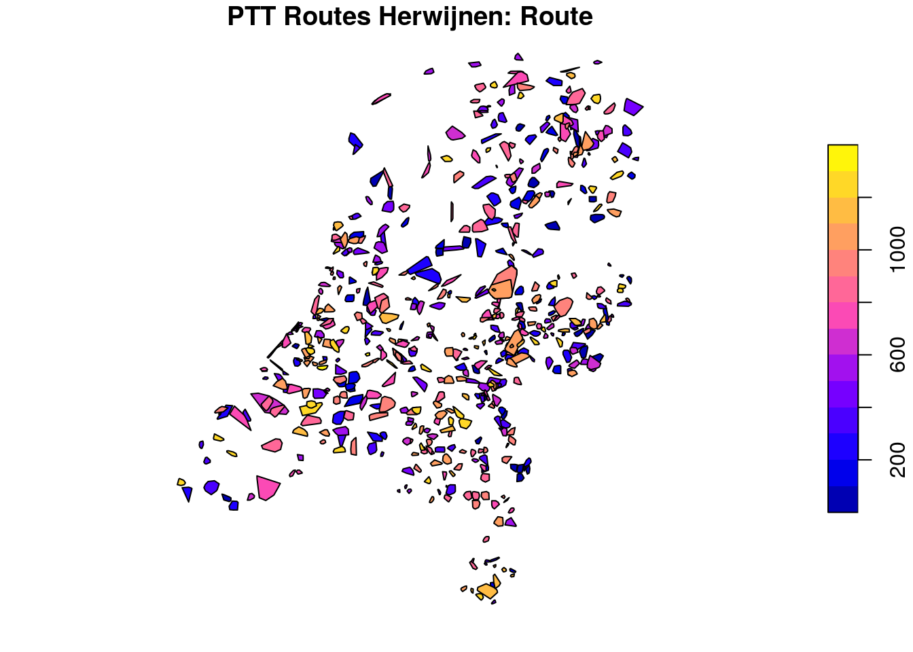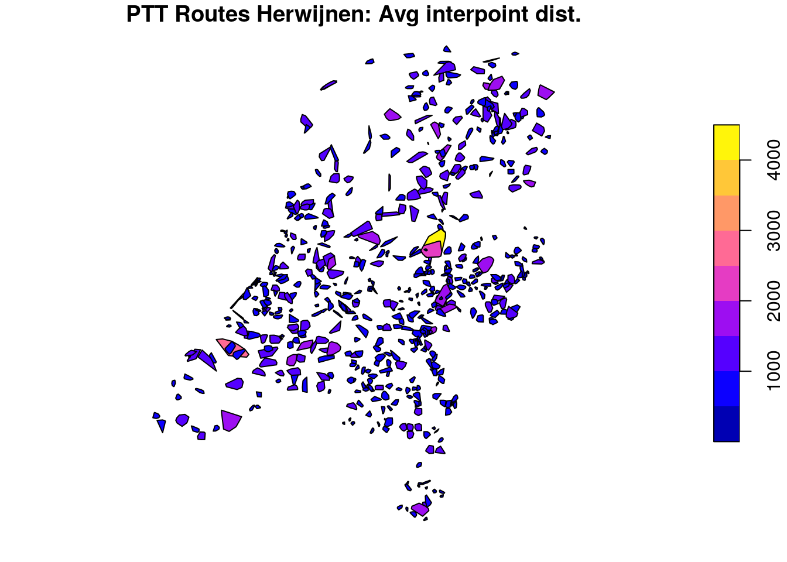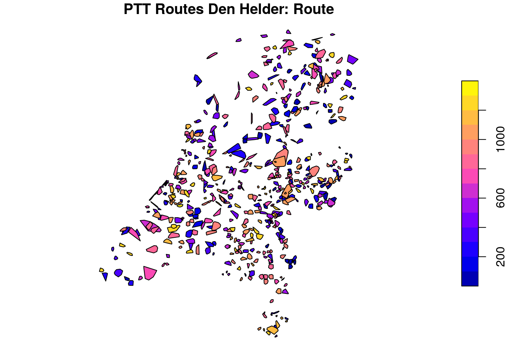
As we have calculated the average distance between the points, we can now buffer the convex hulls by this value to attain more representative sizes of the covered areas.
ptt_convex_hulls_hrw %>%
st_buffer(dist = as.double(ptt_convex_hulls_hrw$avg_interpoint_distance)) -> ptt_convex_hulls_hrw
ptt_convex_hulls_dhl %>%
st_buffer(dist = as.double(ptt_convex_hulls_dhl$avg_interpoint_distance)) -> ptt_convex_hulls_dhl
st_write(ptt_convex_hulls_hrw, "data/processed/sovon/ptt_convex_hulls_hrw.shp", delete_dsn = TRUE)## Warning in abbreviate_shapefile_names(obj): Field names abbreviated for ESRI Shapefile driver## Warning in abbreviate_shapefile_names(obj): Field names abbreviated for ESRI Shapefile driverplot(ptt_convex_hulls_hrw[1], main = "Buffered PTT Routes Herwijnen")
plot(ptt_convex_hulls_dhl[1], main = "Buffered PTT Routes Den Helder")## Deleting source `data/processed/sovon/ptt_convex_hulls_hrw.shp' using driver `ESRI Shapefile'
## Writing layer `ptt_convex_hulls_hrw' to data source `data/processed/sovon/ptt_convex_hulls_hrw.shp' using driver `ESRI Shapefile'
## Writing 591 features with 2 fields and geometry type Polygon.
## Deleting source `data/processed/sovon/ptt_convex_hulls_dhl.shp' using driver `ESRI Shapefile'
## Writing layer `ptt_convex_hulls_dhl' to data source `data/processed/sovon/ptt_convex_hulls_dhl.shp' using driver `ESRI Shapefile'
## Writing 591 features with 2 fields and geometry type Polygon.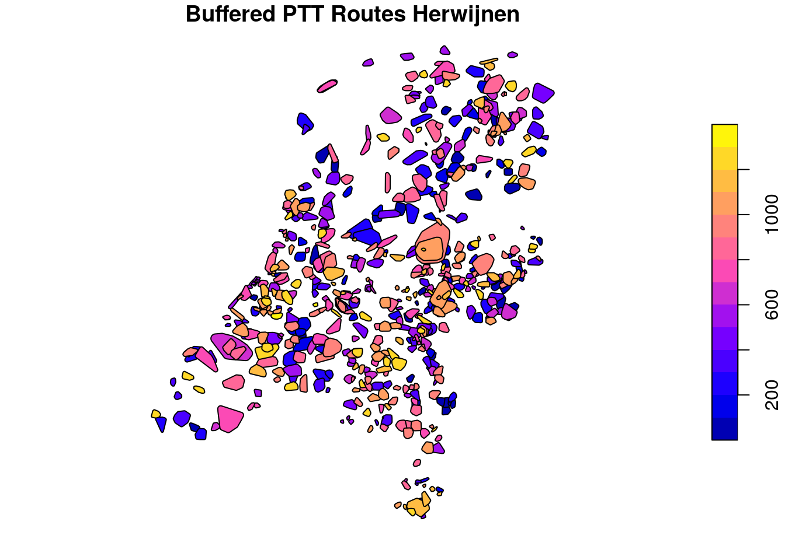
Now that is taken care of, we can rasterize the polygons using the fasterize package. As there is overlap between the areas covered by the routes using the convex hulls and a raster can only contain a single value for every pixel, we need to resolve this overlap. In this case we will compare overlapping areas and pick those where the average distance between the points for that area is lowest. This biases towards counts that cover a smaller area, so probably resulting in more accurate estimates of birds around.
ptt_hrw <- raster(ppi_hrw$data)
ptt_dhl <- raster(ppi_dhl$data)
ptt_hrw <- fasterize(ptt_convex_hulls_hrw, ptt_hrw, field = "route", by = "avg_interpoint_distance")
ptt_dhl <- fasterize(ptt_convex_hulls_dhl, ptt_dhl, field = "route", by = "avg_interpoint_distance")
ptt_hrw <- suppressWarnings(stackApply(ptt_hrw, indices = rep(1, length(ptt_hrw)), fun = min, na.rm = TRUE))
ptt_dhl <- suppressWarnings(stackApply(ptt_dhl, indices = rep(1, length(ptt_dhl)), fun = min, na.rm = TRUE))
plot(ptt_hrw, main = "Rasterized PTT routes Herwijnen")
plot(ptt_dhl, main = "Rasterized PTT routes Den Helder")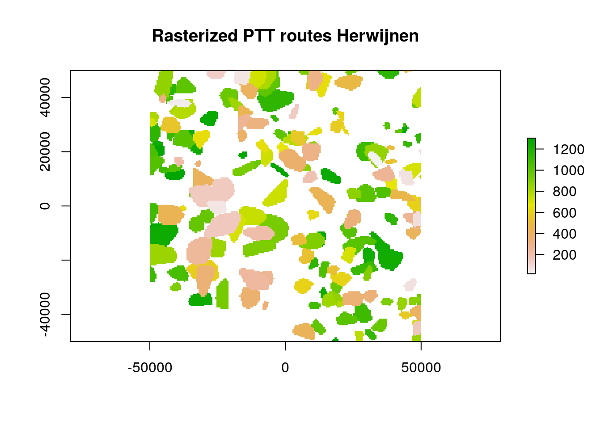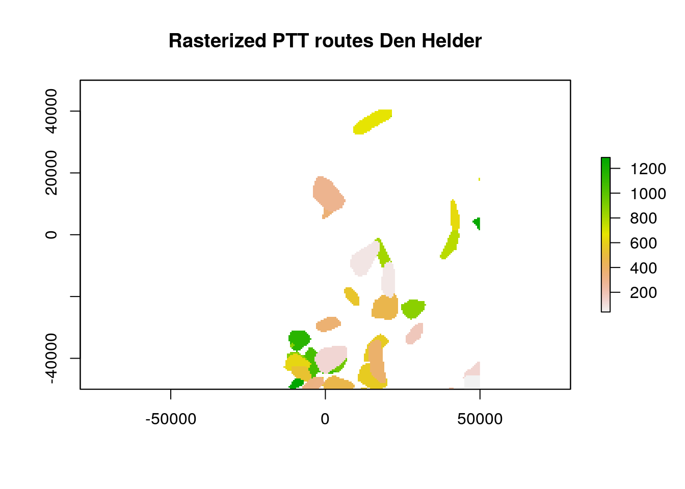
With the rasterization done, let’s compare the resultant raster and see if it is identical to the PPIs.
compareRaster(as(ptt_hrw, "Raster"), as(ppi_hrw$data, "RasterLayer"), extent = TRUE, rowcol = TRUE, crs = TRUE, res = TRUE, orig = TRUE)
compareRaster(as(ptt_dhl, "Raster"), as(ppi_dhl$data, "RasterLayer"), extent = TRUE, rowcol = TRUE, crs = TRUE, res = TRUE, orig = TRUE)## [1] TRUE
## [1] TRUETwo TRUEs, so that’s excellent. We can now add the ptt_route to the PPIs.
ppi_hrw$data$ptt_route <- unlist(as.data.frame(as(ptt_hrw, "Raster")))
ppi_dhl$data$ptt_route <- unlist(as.data.frame(as(ptt_dhl, "Raster")))Let’s verify once again if that occurred as planned.
plot(ppi_hrw, param = "ptt_route", zlim = c(min(ppi_hrw$data@data$ptt_route, na.rm = TRUE), max(ppi_hrw$data@data$ptt_route, na.rm = TRUE)))
plot(ppi_dhl, param = "ptt_route", zlim = c(min(ppi_dhl$data@data$ptt_route, na.rm = TRUE), max(ppi_dhl$data@data$ptt_route, na.rm = TRUE)))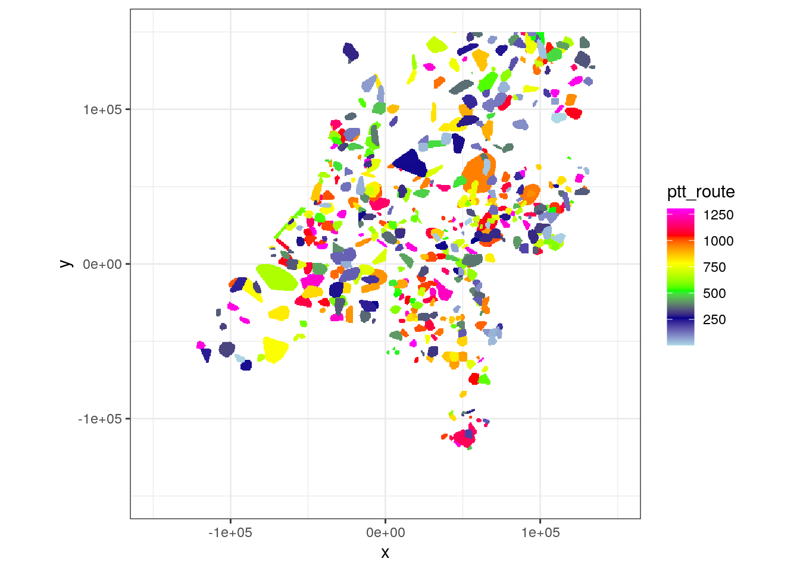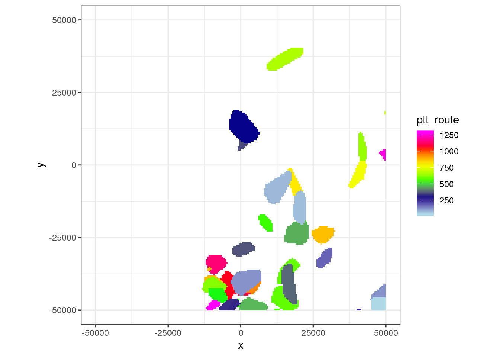
That seems fine, we can now save the PPIs, so we can start linking actual count data.